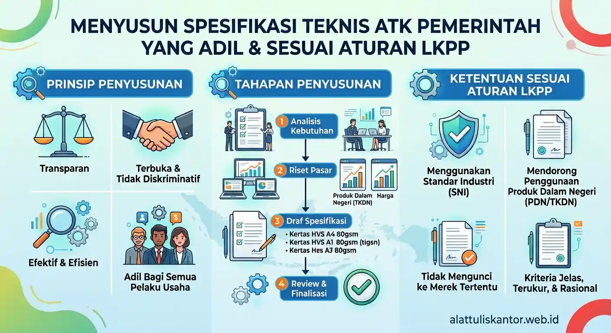

Menyusun spesifikasi teknis untuk pengadaan ATK LPSE adalah tahap krusial yang menentukan kualitas keseluruhan proses tender, namun sering kali menjadi area yang paling rawan kesalahan bagi Pejabat Pengadaan (PP) yang masih baru. Spesifikasi yang terlalu longgar berisiko menghasilkan barang berkualitas rendah, sementara spesifikasi yang terlalu ketat bisa dianggap mengarah ke merek tertentu (post-bidding discrimination) yang melanggar prinsip persaingan sehat dalam pengadaan pemerintah.
Artikel ini membahas cara menyusun spesifikasi teknis ATK yang adil dan sesuai aturan LKPP, sekaligus mengatasi masalah klasik lain yaitu vendor yang lambat mengirim dokumen BAST setelah barang sampai.
1. Bagaimana Cara Menyusun Spesifikasi Teknis ATK Pemerintah yang Adil?
Spesifikasi teknis ATK pemerintah yang adil harus disusun berdasarkan fungsi dan kebutuhan (functional specification), bukan menyebut merek tertentu—misalnya mencantumkan "kertas HVS 70 gsm, ukuran A4, warna putih, tingkat kecerahan minimal 92% ISO brightness" alih-alih menyebut merek dagang tertentu, sehingga membuka ruang persaingan yang sehat bagi seluruh penyedia yang memenuhi kriteria teknis tersebut.
Prinsip ini sejalan dengan ketentuan pengadaan pemerintah yang mewajibkan spesifikasi bersifat generik dan tidak mengarah pada merek atau penyedia tertentu, kecuali dalam kondisi khusus yang memang dibenarkan peraturan.
2. Prinsip Dasar Penyusunan Spesifikasi Teknis yang Sesuai Aturan LKPP
1. Gunakan Spesifikasi Fungsional, Bukan Merek Dagang
Fokus pada karakteristik teknis yang dibutuhkan—gramatur, ukuran, warna, tingkat kecerahan, atau standar mutu tertentu—bukan menyebutkan nama merek spesifik yang secara tidak langsung membatasi penyedia lain untuk berpartisipasi.
2. Tetapkan Standar Mutu yang Terukur dan Dapat Diverifikasi
Spesifikasi sebaiknya mencantumkan parameter yang bisa diverifikasi secara objektif, seperti sertifikasi SNI, ISO brightness untuk kertas, atau sertifikasi non-toxic untuk alat tulis anak, agar proses evaluasi penawaran dapat dilakukan secara adil dan terukur.
3. Hindari Spesifikasi Berlebihan yang Tidak Relevan dengan Kebutuhan
Menambahkan persyaratan teknis yang terlalu spesifik dan tidak relevan dengan fungsi dasar produk berpotensi dianggap sebagai upaya mengarahkan pemenang ke penyedia tertentu, yang bertentangan dengan prinsip persaingan sehat dalam pengadaan pemerintah.
4. Libatkan Kajian Pasar Sebelum Menyusun Spesifikasi Final
Lakukan survei harga dan spesifikasi pasar (market sounding) sebelum menetapkan spesifikasi akhir, untuk memastikan spesifikasi yang disusun realistis dan dapat dipenuhi oleh cukup banyak penyedia di pasar, bukan hanya segelintir vendor tertentu.
3. Tabel Contoh Spesifikasi Teknis yang Baik vs Berisiko Mengarah ke Merek
| Item | Spesifikasi Berisiko (Mengarah Merek) | Spesifikasi Adil (Fungsional) |
|---|---|---|
| Kertas HVS | "Kertas HVS merek [X], ukuran A4" | Kertas HVS 70 gsm, ukuran A4, tingkat kecerahan minimal 92% ISO brightness |
| Pulpen | "Pulpen merek [Y] tipe gel" | Pulpen tinta gel/hybrid, mata pena 0,5-0,7mm, tinta hitam/biru sesuai kebutuhan |
| Map Arsip | "Map arsip merek [Z] warna biru" | Map arsip bahan plastik/karton tebal minimal 0,3mm, tersedia pilihan warna standar |
Catatan: Spesifikasi fungsional membuka ruang persaingan yang lebih sehat bagi seluruh penyedia yang memenuhi kriteria teknis.
Poin Penting: Spesifikasi yang adil adalah spesifikasi yang dapat dipenuhi oleh lebih dari satu penyedia, bukan hanya satu merek tertentu. Semakin banyak penyedia yang bisa memenuhi spesifikasi, semakin kompetitif proses tender.
4. Cara Menyusun Kriteria Evaluasi yang Objektif Berdasarkan Spesifikasi Teknis
Setelah spesifikasi teknis disusun, langkah berikutnya adalah menetapkan kriteria evaluasi yang objektif dan tidak multitafsir:
- Tentukan metode evaluasi yang sesuai, apakah sistem gugur (memenuhi/tidak memenuhi spesifikasi minimum) atau sistem nilai (scoring) bila ada beberapa kriteria teknis dengan bobot berbeda.
- Cantumkan dokumen pendukung yang wajib dilampirkan penyedia, seperti sertifikat SNI, hasil uji laboratorium, atau brosur teknis produk yang ditawarkan, sebagai bukti pemenuhan spesifikasi.
- Tetapkan mekanisme verifikasi sampel bila diperlukan, terutama untuk item dengan risiko tinggi seperti alat tulis anak yang memerlukan pembuktian keamanan bahan secara langsung sebelum kontrak ditandatangani.
5. Mengapa Vendor Sering Lambat Mengirim Dokumen BAST Setelah Barang Sampai?
Selain penyusunan spesifikasi, masalah klasik lain yang sering dikeluhkan instansi adalah keterlambatan dokumen Berita Acara Serah Terima (BAST) meski barang sudah diterima. Penyebab paling umum meliputi:
- Vendor tidak menyiapkan draf dokumen sebelum barang tiba, sehingga proses penyusunan BAST baru dimulai setelah barang benar-benar sampai di lokasi, yang tentu memperlambat keseluruhan proses.
- Tidak ada kejelasan penanggung jawab di pihak vendor untuk urusan administrasi dokumen, terutama pada vendor dengan struktur organisasi yang kurang terkoordinasi antara tim pengiriman dan tim administrasi.
- Ketidaksesuaian jumlah atau kondisi barang saat verifikasi, yang memerlukan proses klarifikasi tambahan sebelum BAST dapat disetujui kedua belah pihak.
6. Cara Mengantisipasi Keterlambatan BAST Sejak Tahap Penyusunan Kontrak
Untuk mencegah masalah ini terulang, instansi dapat mengantisipasinya sejak tahap penyusunan Surat Pesanan (SP) atau kontrak:
- Cantumkan klausul SLA penerbitan BAST secara eksplisit dalam kontrak, misalnya kewajiban vendor menyiapkan dokumen maksimal 1x24 jam setelah barang diverifikasi diterima.
- Minta konfirmasi kesiapan dokumen sebelum barang dikirim, sehingga vendor sudah menyiapkan draf BAST bersamaan dengan proses pengiriman, bukan menunggu barang tiba baru mulai menyusun dokumen.
- Tunjuk petugas penerima barang yang jelas dan responsif, agar proses verifikasi dapat dilakukan segera setelah barang tiba tanpa menunggu jadwal yang tidak pasti.
- Terapkan sanksi administratif dalam kontrak bila vendor berulang kali terlambat menerbitkan BAST, sebagai bentuk komitmen kualitas layanan yang mengikat secara hukum.
Studi Kasus: Perbaikan Proses Setelah Spesifikasi dan SLA Diperjelas
Salah satu instansi daerah yang kami dampingi sebelumnya kerap mengalami sengketa evaluasi tender karena spesifikasi teknis yang disusun terlalu umum sehingga sulit membedakan kualitas antar penawaran, sekaligus menghadapi keterlambatan BAST dari vendor pemenang tender sebelumnya.
Setelah menyusun ulang spesifikasi teknis secara fungsional dengan parameter terukur (gramatur, tingkat kecerahan, sertifikasi SNI) dan menambahkan klausul SLA BAST maksimal 1x24 jam dalam kontrak baru, proses evaluasi tender menjadi lebih objektif dan proses pencairan anggaran menjadi lebih cepat karena dokumen administrasi tidak lagi menjadi hambatan berulang.
7. Tips Tambahan Menyusun Dokumen Pendukung Spesifikasi Teknis
Selain menyusun spesifikasi utama, beberapa dokumen pendukung berikut membantu memperkuat objektivitas proses evaluasi tender:
- Lampirkan referensi standar mutu resmi seperti SNI atau ISO yang relevan dengan kategori produk, sebagai acuan yang dapat diverifikasi secara independen oleh semua pihak yang terlibat dalam evaluasi.
- Sertakan contoh foto atau ilustrasi produk generik (bukan produk bermerek) untuk membantu penyedia memahami gambaran teknis yang diharapkan tanpa mengarah pada merek tertentu.
- Cantumkan metode pengujian sampel jika relevan, terutama untuk kategori produk dengan risiko keamanan tinggi seperti alat tulis untuk anak-anak di lingkungan pendidikan yang dibiayai pemerintah.
8. Peran Penting Dokumentasi yang Konsisten dalam Menghindari Sengketa Tender
Selain menyusun spesifikasi yang adil, dokumentasi proses pengadaan yang konsisten juga berperan besar dalam mencegah sengketa di kemudian hari. Setiap tahapan mulai dari penyusunan spesifikasi, proses evaluasi, hingga penerbitan kontrak sebaiknya terdokumentasi dengan jelas dan dapat ditelusuri, sehingga bila ada keberatan dari peserta tender yang tidak menang, instansi memiliki dasar yang kuat untuk menjelaskan proses evaluasi yang telah dilakukan secara objektif dan sesuai ketentuan yang berlaku.
Dokumentasi yang baik juga mempermudah proses audit internal maupun eksternal, karena setiap keputusan dalam proses pengadaan dapat ditelusuri kembali alasannya, termasuk pertimbangan teknis yang mendasari penetapan spesifikasi dan hasil evaluasi setiap penawaran yang masuk.
Sebagai pihak yang memahami seluk-beluk regulasi pengadaan pemerintah, kami membantu instansi daerah menyusun spesifikasi teknis yang adil sekaligus memastikan komitmen SLA pengiriman dokumen yang jelas dalam setiap kerja sama. Untuk melihat katalog produk yang dapat disesuaikan dengan spesifikasi teknis kebutuhan instansi Anda, silakan kunjungi halaman produk kami.
9. Kesimpulan
Menyusun spesifikasi teknis ATK pemerintah yang adil dan sesuai aturan LKPP memerlukan pendekatan fungsional yang terukur, bukan mengarah pada merek tertentu, agar proses tender berjalan dengan prinsip persaingan sehat. Dikombinasikan dengan klausul SLA BAST yang jelas sejak tahap kontrak, instansi dapat menghindari sengketa evaluasi maupun keterlambatan administratif yang selama ini kerap menghambat proses pencairan anggaran.
Butuh pendampingan menyusun spesifikasi teknis ATK yang sesuai ketentuan LKPP untuk instansi Anda? Hubungi tim kami via WhatsApp di 0889-8964-3555 untuk konsultasi gratis.